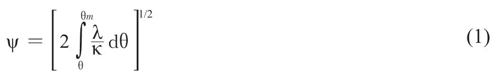
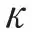
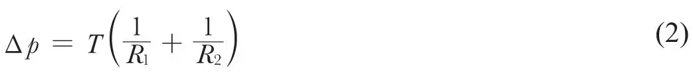
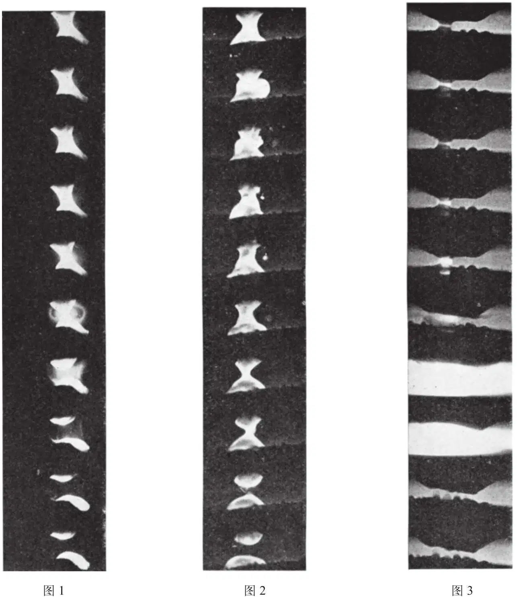

英文
英文卢埃林-琼斯，普赖斯
编者按
电接触的断开中似乎不会藏有高深的物理意义。然而，在本文中物理学家弗兰克·卢埃林－琼斯及其同事们指出：这个问题比人们通常想象的要复杂得多。在一个闭合电路的接触即将断开的时候，通过它的电流一定会经过一个更加狭窄的路径。这种情况必然会产生大量的热，甚至导致金属的沸腾。确实，他们通过简单的计算表明在每次断开电路时都会有体积为10–12厘米3数量级的小块金属消失，最终使这个电接触毁坏。研究者们也展示了一系列电接触间形成的微小金属桥的高速照相图片，这是理解此过程的关键。 英文
低压下（约为4伏特）电接触断开的过程有重要的基础物理学意义，同时对电子工程学和通信工程领域也有重要的实用价值。众所周知[1]，初始状态是两个电极紧压在一起处于完全导通的状态，断开过程中会导致电流线的收缩，这会导致在最后的微观接触区域产生很强的局部加热和熔化。在接触区的最高温度与电势差有关，可以通过ψ，θ定理表示，如下式：

式中ψ为广义势（在没有热电效应情况下就等于电势），θ为温度，λ为热导率，

为电导率。因此，随着电极的逐渐分离，收缩电阻增大，温度升高并超过了金属的熔点。继续分离，熔化的体积随之增加，这种熔融金属逐渐被拉成连接着两个固体电极的微观桥；电接触最终会断开，但只有这个微观的桥断开时整个电路才会断开。然而，这个断裂过程可能是非常复杂的并且会导致金属从一个电极转移到另一个电极上，当不断重复这个过程时，便会产生“点”和“坑”状形态，以致过一段时间后触点失效。有证据[1,2]表明，每次操作过程中物质的转移量（在电流为5安培的电路中约10–12厘米3）与熔融金属桥的尺寸（宽度约为10–4厘米/安培）有关，因此桥的稳定性、增长性以及最终的断裂都是具有重要意义的，这不仅是对实际应用而言，而且对研究熔融状态和高温状态下金属的一些物理性质也有重要意义。 英文
首先，至少是在较早期阶段，达到平衡的一个重要条件取决于表面张力的应用。桥的形状将由满足式（2）的旋转曲面构成：

当∆p分别为正值、零或负值[3]时，形态依次是类波状、类链状或类结节状。静态微观桥的照片的确已证实这些稳定形态是可以达到的[1]。在断开的较后期阶段，∆p将是负值，实验已证实最终的稳定形态通常是类结节状。ψ，θ定理表明，相同电极间的微观熔融金属桥中最热的区域可能位于窄口处，初看之下，这里非常有可能就是金属桥即将断裂的地方。然而，有关这个最终过程的详细研究引发出了一系列高温下金属物理的重要问题，尤其在接近沸点时。 英文
断裂的机制
从ψ，θ定理可以一目了然地看出，熔融金属桥的断裂机制涉及许多金属的物理性质，但断裂并不是发生在某一特定温度下，而是在逼近沸点的较大温度范围内都会发生，许多不同的断裂过程都是有可能的。 英文
首先，电极的连续分离和桥的拉长增大了接触电阻Rc；结果，对于给定的回路电流Ic，其接触电压Vc (=RcIc)连续增高。对ψ，θ定理的分析表明，最高温度θm相应地增高；实际上，用威德曼－弗朗兹定律很容易看出，当接触电压Vc超过约1.5伏特时，由式（1）得出的θm对应值超出了任何已知金属的沸点。因此使最高温度上升的过程会持续下去直至θm达到沸点θb，从而使熔融金属桥断裂。此时的电压Vb称为沸点电压，它通过式（1）与θb相关。对ψ，θ定理做进一步分析[4]可知，由于ψ和θ的关系取决于λ/随θ的变化，因此λ/和θ之间具有特定的函数关系时可以产生热的不稳定性，在这种情况下，θm在特定的环境中可能突然上升至沸点。通过测量接触电流、电势差和最高温度及其位置，便能得出金属的输运性质，例如，金属的热导率、电导率和汤姆孙系数以及这些性质在高温熔融态下与温度之间的关系[1]。 英文
然而，这些热效应并不是导致桥断裂的唯一过程。例如，电磁箍缩效应可产生很大的电流，因此在最窄、最热因而最薄弱的点使桥收缩，并导致其断裂。此外，已知的表面张力随温度而变化也是影响桥稳定性的一个重要因素，这些结果只能被表面杂质的影响或对桥内部黏滞运动的补偿所抵消。在特定的实际电接触中，由于真实电极尺寸和几何形状的限制会有效地阻止稳定类结节状桥的连续形成，从而使其具有了不稳定性。 英文
从实际的观点看，考虑到最终桥的形态和尺寸及其断裂机制与桥断裂时物质转移的速率有关，所以它们都是非常重要的。例如，假定热电效应会将熔融金属桥的最热部分移向某个电极，则将引起在某个特定位置上发生断裂并导致从一个电极净转移到另一个电极的效果。那么传递的量只是颈部最热区域的量。另一方面，在另一不同断裂过程中，熔融金属桥作为整体分解，并转移到一个或另一个电极（譬如说，通过微滴的机械喷溅），那么在这种情况下，物质转移量可以相当高，当然，这也可能具有重大的实际影响。 英文
因此，电路实际断开的详细过程是一个具有重要的应用性和理论性的课题，我们在斯旺西大学已对此现象做了一段时间的研究。研究人员也对熔融金属桥的尺寸与电流、每次操作中转移的物质以及局部自感之间的关系开展了研究[1,5-10]。 英文
采用放射性示踪技术，能够精确测量出在熔态金属桥断裂时实际转移到给定电极的金属量（约为10–12克）。人们已发现在许多金属中，特别是铂[1,6-9]中，局部电感（尤其是在10–6亨~10–8亨之间）有很快的变化。并且，通过对由桥断裂形成的坑状结构进行的光学检测发现，在一些金属中，整个熔融金属桥的体积都参与了转移。这个微观桥的形态和大小取决于各个电极断裂后熔融等温线的几何形状。 英文
这些情况很难与由熔融金属桥分解时产生的微滴机械喷溅而导致的物质转移图像相吻合。相反，这些情况与如下观点更为一致，即这种物质的转移是呈离子态的，而这种离子的运动取决于熔融金属桥断裂后在电极间振荡的电场。由于上述原因，人们提出了另一种基于微等离子体产物的观点，这一微等离子体很有可能最初形成于熔融金属桥的断裂颈上[11]。因此，近年来我们努力寻找这类等离子体存在的直接证据。可喜的是，由于熔融金属桥发展的最后一步的变化速度，使得等离子体扩张到能易于看到的尺寸的情况并没有发生。实际上，尤其是在高压环境的气氛下，在金属蒸气等离子体的短寿命内，它的大小受到了严格的限制。 英文
微观熔融金属桥的拍摄
早期对于拍摄桥断裂过程的尝试受到一些条件的限制，因为人们认为表面张力会成为首要的控制力，从而能获得大而稳定的桥。这样的照片最先是在空气[1]中对大的铁金属桥拍摄而得。在适宜的环境下，表面上的氧化膜将在整个表面范围内产生恒定的表面张力，因此得到如式（2）中的稳定性。 英文
我们采用许多标准的电影胶卷（25帧/秒）对桥的形成、发展和最终的断裂过程进行拍摄，我们对成千上万个镜头进行分析，希望能够发现桥实际断裂时的景象，最终找到了一两个镜头，显示出实际的断裂过程可能不是一个简单的类结节体的分开，并且这也表明如果想对断裂进行更细致地分析，就必须使用高速照相机。利用高速照相机拍摄熔融金属桥面临相当多困难，这主要是因为拍摄的目标范围非常小（小于等于10–4厘米2），除铂金属和钨金属外，其他金属的亮度都很低，控制好现象发生与拍摄的同步也很困难。此外桥在寿命中不同阶段持续的时间不好把握，这同样为拍摄带来了困难。尽管如此，还是设计和制造了一个结合了高速照相机的光学系统，它能够以约为10微秒的时间间隔对熔融金属桥的断裂过程进行拍摄。利用这种方法，我们在不同的气氛和气压下对大量的金属进行了研究。通过这种方式获得的一些初步的照片，在俄克拉荷马州[5]、格拉茨[9]和柏林[10]的会议上进行了展示。这里给出几组后来得到的照片，照片拍摄到一段连续的镜头，覆盖了几毫秒内微观熔融金属桥断裂时不同阶段的一些细节。铁金属的结果格外有趣，因为它们说明了本文中讨论的在不同条件下断裂过程的三种状态，结果如图1、图2和图3中所示。 英文
图1示出了以每秒104帧拍摄到的一系列照片，其中金属铁是在空气中处理的。毫无疑问的是随后的氧化反应会影响到表面张力，在经过多次操作后才最终形成形状完好的稳定桥，并且这与稳定的类结节型桥的理论预测是相一致的。稳定性受到表面张力的控制，事实上照片清楚显示出，桥是在最热部分沸腾时断裂的，并且在断裂后形成两个白热分离的部分。 英文

图1．材料：铁；气氛：空气；电流：30安培；回路电动势：6伏特；极性：顶部电极为负极；放大倍数：×6；帧速率：5,000帧/秒。
图2. 材料：铁；气氛：空气；电流：30安培；回路电动势：6伏特；极性：顶部电极为负极；放大倍数：×6；帧速率：2,000帧/秒。
图3. 材料：铁；气氛：真空；电流：60安培；回路电动势：6伏特；极性：顶部电极为正极；放大倍数：×19.5；帧速率：7,000帧/秒。 英文
图2示出一个稍不稳定的条件，该条件下氧化的程度使表面张力不能在表面保持不变。这种情况下，稳定性仅靠内部的黏滞运动产生，并且这与用桥表面最热区域处帧－帧之间的快速变化说明的效应是一致的。 英文
在稳定性的建立过程中为了使表面张力的效应最小，我们利用在氢中辉光放电处理法对铁的表面进行了清洗，而且为了避免进一步的氧化，接触在真空中进行。在这种情况下建立的桥通过图3中的系列照片进行了说明。这与图1和图2的两个系列照片有很大差别，图3中当熔融金属桥以液体的形式存在时，其不会以很小的截面分离。相反，在这种情况下，在完全分解的桥上已出现电的微放电，在小于100微秒或可能小于10微秒的时间内产生了高亮度的高密度等离子体。由于在这些情况下无法明显地扩展，因此微等离子体中的粒子密度必然是极高的。 英文
在其他金属中已发现了类似效应，放射性示踪技术使在存在等离子体的这段极短时间内对金属转移方向进行测定成为可能。 英文
我们感谢位于奥尔德马斯顿的英国原子能管理局原子武器研究中心的爱恩·马多克先生借给我们一台高速照相机并提供了一些建议；感谢科学及工业研究署颁发给我们之间的一员（普赖斯）的研究生研究奖学金，也同样感谢皇家学会同意为给我们购买一些贵金属。 英文
（沈乃澂 翻译；赵见高 审稿）